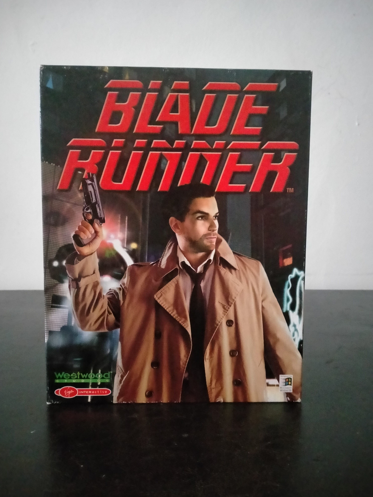

Ficha #000004
Blade Runner
Adaptación libre del universo cinematográfico de Blade Runner desarrollada por Westwood Studios y publicada originalmente en 1997. El juego traslada al PC una aventura detectivesca ambientada en Los Ángeles de 2019, con investigación no lineal, múltiples finales y una estructura de acontecimientos parcialmente variable entre partidas. Destacó por su uso de escenarios prerenderizados con personajes voxelizados, iluminación atmosférica, lluvia, niebla y una fuerte apuesta por la ambientación audiovisual. Esta edición física española/portuguesa en caja grande conserva especial interés documental por representar una de las aventuras cinematográficas más ambiciosas de finales de los noventa y uno de los títulos tardíos más recordados de Westwood fuera de la estrategia en tiempo real.
- Formato
- Big Box
- Plataforma
- Win95 Win98
- Género
- Aventura gráfica Aventura en tiempo real Ciencia ficción Investigación detectivesca
- Serie
- Todos Big Box
- Desarrollador
- Westwood Studios
- Distribuidor
- Virgin Interactive Entertainment, Virgin Interactive Entertainment España
- EAN
- 5028587010408
Contenido de la edición
- Caja grande de cartón
- Estuche jewel case con CD-ROM
- Manual en español/portugués
- Documentación impresa
Preservación
- Protección
- No determinado
- Formato recomendado
- ISO
- Jugable en virtualización
- Sí
Recomendable preservar los discos ópticos mediante imagen BIN/CUE o ISO y conservar escaneos de la documentación incluida. La ejecución moderna suele requerir entorno Windows 9x virtualizado o soluciones de compatibilidad específicas para aventuras clásicas de PC.